当前可验证
质量闭合、非负水深、局部惯性通量、空间 Manning/降雨/入渗、建筑固体掩膜、命名流量/水位边界和排水汇记账。
真实 DEM 是必要输入，但可信性来自完整证据链。本提案把代码验证、解析基准、入渗实验、城市水动力实验和真实事件盲测分开，避免用一张“看起来相似”的淹没图替代物理验证。
质量闭合、非负水深、局部惯性通量、空间 Manning/降雨/入渗、建筑固体掩膜、命名流量/水位边界和排水汇记账。
常量入渗 f 表示等效损失率，尚未表达随含水状态变化的真实土壤入渗容量。
真实城市 30 m 速度精度、河道洪水适用性、管网回涌、工程设计或生命安全阈值有效性。
高保真有限体积模型只能用于模型互比，不能代替实验或现场观测。卫星洪水范围也不能单独验证速度、方向或入渗。
用 CO/CE/Ref 选择一套全局参数，再对 Px5/Py5/BU/BS/BD 锁参预测。水深、出口分流、表面速度与方向必须同时过门；本轮 4/5 构型已执行，但精度与稳态门槛未通过。
NYC FloodNet 同时保留传感器正下方水深和局部低点修正水深；潮汐与非潮汐站点分层。官方事件序列已完整审计，下一步组装同步降雨、潮位和城市地形。
USGS Muddy Creek 提供真实事件、DEM、糙率、HEC-HMS/HEC-RAS 工程、7 站水位与高水痕。数据已齐全，当前工作转为 DSS、空间基准和河道边界适配。
期刊级最低条件：参数和事件划分预注册；至少一个严格未见事件；网格/时间步/输入不确定性；失败案例完整保留；代码、原始数据散列、处理脚本、逐站结果与置信区间可复现。
completed
partial / bounded
running or planned
| ID | 实验 | 状态 | 规模 | 证据文件 |
|---|---|---|---|---|
| A | 代码与数值可信性守恒、非负、CPU/GPU一致性、网格和时间步敏感性 | completed已有实际运行结果 | 11 files26.6 KiB | |
| B | 解析基准定常流、摩阻、降雨、干湿界面或波传播的解析预期 | partial已完成数据/能力审计，仍有明确边界 | 11 files23.0 KiB | |
| C | 复杂二维标准基准复杂地形、城市障碍、传播时间与空间水深 | completed已有实际运行结果 | 86 files306.4 MiB | |
| D | 入渗—产流常量损失与状态型入渗模型的跨事件盲测 | completed已有实际运行结果 | 25 files175.8 MiB | |
| E | 城市水动力初始诊断水深、出口分流、二维表面速度和方向 | partial已完成数据/能力审计，仍有明确边界 | 84 files190.0 MiB | |
| F | Fourmile 可行性降雨、流量、水位、水痕、DEM与模型适用性 | partial已完成数据/能力审计，仍有明确边界 | 10 files1.9 MiB | |
| G | 城市水槽锁参盲测三构型率定、五构型盲测与网格敏感性 | partial已完成数据/能力审计，仍有明确边界 | 13 files231.2 KiB | |
| H | NYC 街道积水真实城市传感器水深时序、局部低点与潮汐分层 | partial已有结果文件，待总审计 | 19 files36.4 MiB | |
| I | Muddy Creek 真实洪水完整降雨—径流—二维水动力档案与独立事件 | partial已有结果文件，待总审计 | 1064 files1.5 GiB | |
| J | 城市 GIS 核心回归统一 CRS、建筑 DEM/固体体积、空间参数和守恒边界 | completed已有实际运行结果 | 14 files253.5 KiB | |
| K | 建筑高度—DEM 基准官方高度 Shapefile、NAVD88/单位契约与纯地形道路策略 | completed已有实际运行结果 | 26 files329.2 MiB |
另有 3 项跳过或仅报告；CUDA 一致性本轮未执行。
湿润前缘误差 9.16 m；局部惯性方程未通过完整 SWE Ritter 剖面对比。
最终水位最大误差 5.33 mm；相对水量闭合 3.17e-07。
28 个留站事件：状态模型体积 RMSE 19.63 mm，常量损失率为 27.66 mm；只验证产流子机理。
方向 MAE 27.29°；表面速度与深度平均速度非等价，只计诊断。
观测与水痕已整理；缺少河道几何和指定水位/流量边界，模拟对齐被明确阻塞。
水深 MAE 3.94 mm，方向 MAE 31.98°；多项阈值失败，不构成正式验证。
共 337767 个水深点；候选事件已筛选，但降雨、潮位、DEM 与排水边界尚未组装运行。
完整模型档案 966 个文件，DEM/糙率/降雨存储/二维几何齐全；格式与边界适配尚未完成。
建筑内最大水深 0.0e+00 m；水量闭合 8.25e-07。这是合成 GIS 代码验证，不是现实事件验证。
单位、相对高度公式与 solid-mask 门控通过；建筑 GROUNDELEV 对 NOAA DEM 的绝对误差 p95 为 2.61 m，二者不可互换。
绿色表示在所列标准内通过；黄色表示已实际运行但只构成方程范围或观测可比性诊断；红色表示真实数据已获取，但必要模型能力缺失。
| 对象 | 核心指标 | 不能遗漏 |
|---|---|---|
| 入渗与产流 | 累计入渗、径流体积偏差、产流开始、峰值/峰现、NSE、KGE | 初始土壤湿度与水量闭合 |
| 水深 | MAE、RMSE、峰值偏差、首次超阈与退水时间 | 点位过程，而非只看最大范围 |
| 速度 | RMSE(u)、RMSE(v)、向量 RMSE、速度模长 MAE | 表面速度与深度平均速度的观测算子 |
| 方向 | 圆周误差中位数、≤15°/30°/45°比例、反向流错误 | 预注册低水深/低速度共同掩膜 |
| 范围与业务 | CSI/IoU、POD、FAR、到达时间、高危险召回率 | 高危险漏判面积与持续时间 |
按完整场地/实验划分训练与盲测；比较常量损失和状态型模型，不随机拆分钟样本。
用少数布局校准统一糙率，在未见布局上冻结参数；同时比较水深、出口分流、u/v 与方向。
至少 2 场校准、2 场独立验证、1 场极端压力测试；失败事件保留。
可辨识性约束：入渗率和 Manning 糙率可能共同改变局部最大水深。必须联合使用总径流体积、水深过程、峰值时间、断面流量和速度，避免“参数错误但结果碰巧吻合”。
| 数据 | 当前结论 | 用途 |
|---|---|---|
| Li 城市水槽 HDF5/LSPIV | 已获取 | 微观水深、分流、速度、方向与几何迁移盲测 |
| NYC FloodNet 事件与部署元数据 | 已获取 | 真实街道水深时序、峰值、持续时间和潮汐分层 |
| USGS Muddy Creek 完整模型档案 | 已获取 | 真实降雨驱动事件、DEM、糙率、连续水位、高水痕 |
| 目标城市私有排水管网、泵闸与运维记录 | 通常需用户 | 目标城市最终应用、管网回涌和边界真实性 |
| 目标城市高精度 DEM 与同步积水观测 | 公开优先；不足时需用户 | 把公开基准迁移到用户真正关心的城市 |
用户数据清单和格式要求见 USER_DATA_REQUEST.md。公开数据足以推进方法论文和适配器开发；若论文要声称“适用于某一目标城市”，仍应补充该城市的本地边界、排水和独立观测。
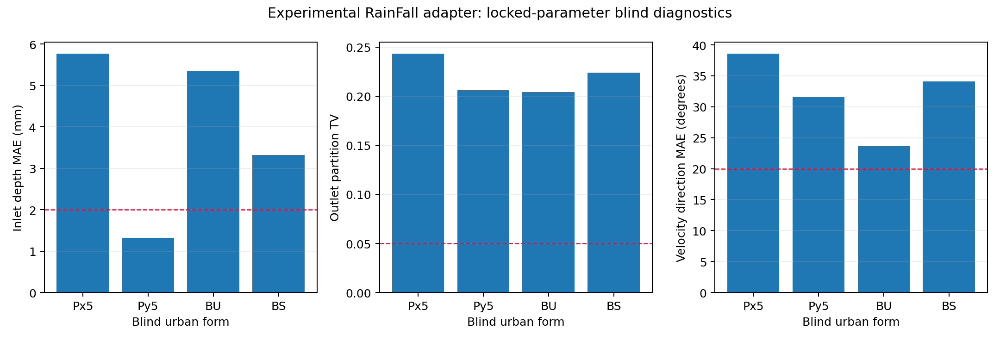
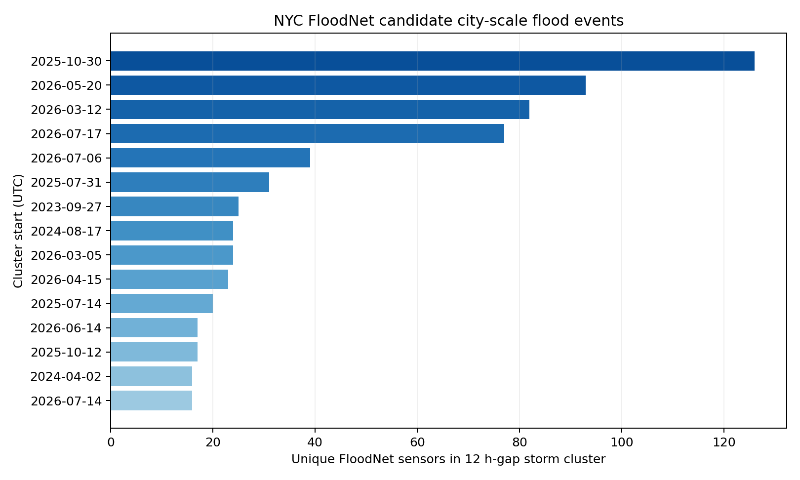
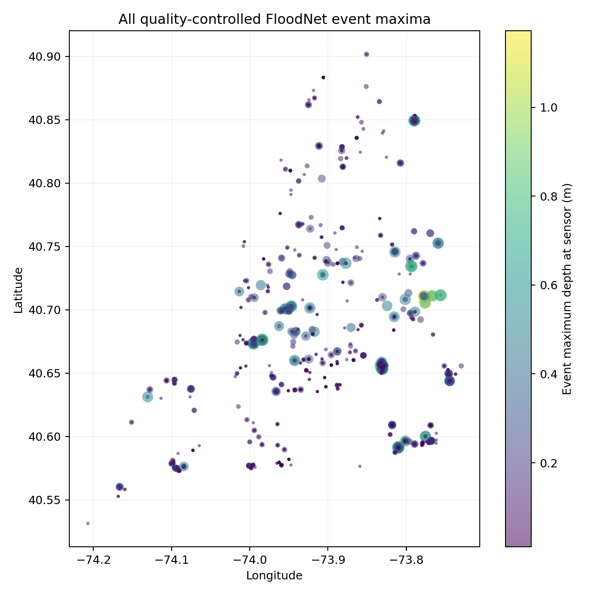
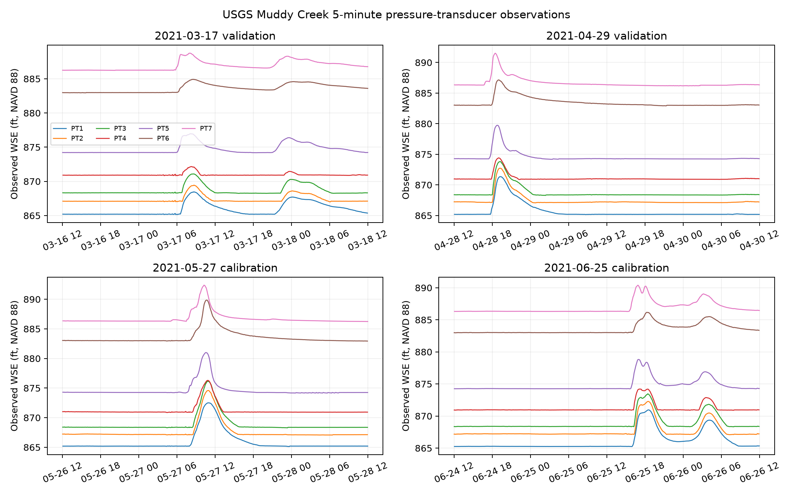
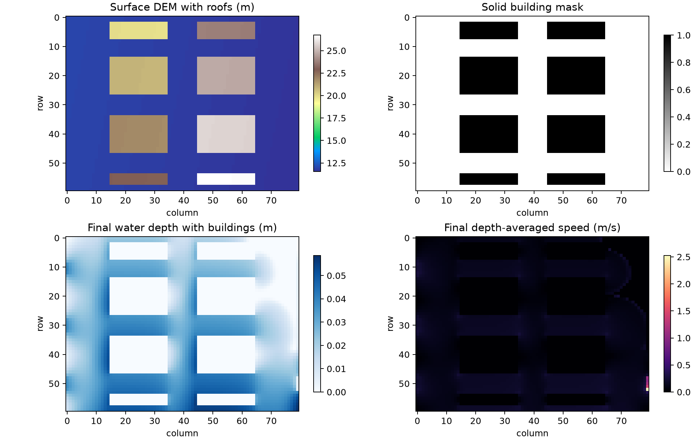
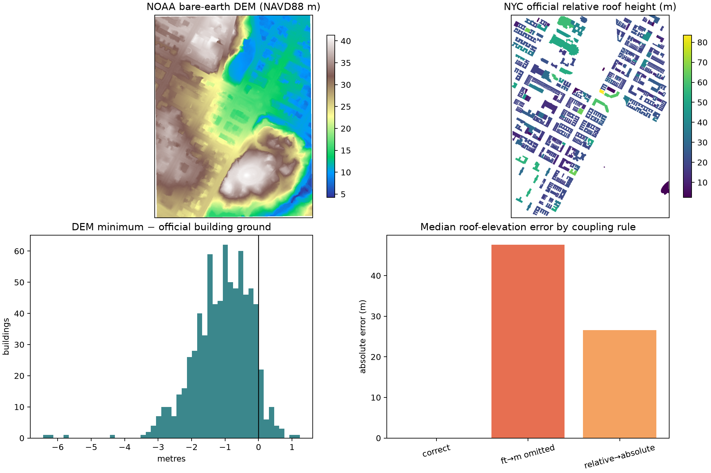
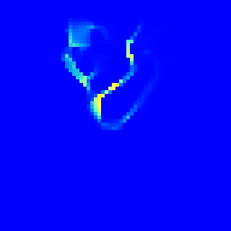
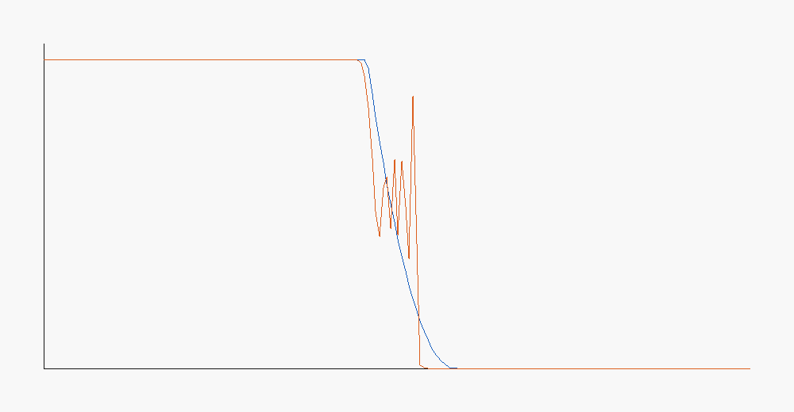
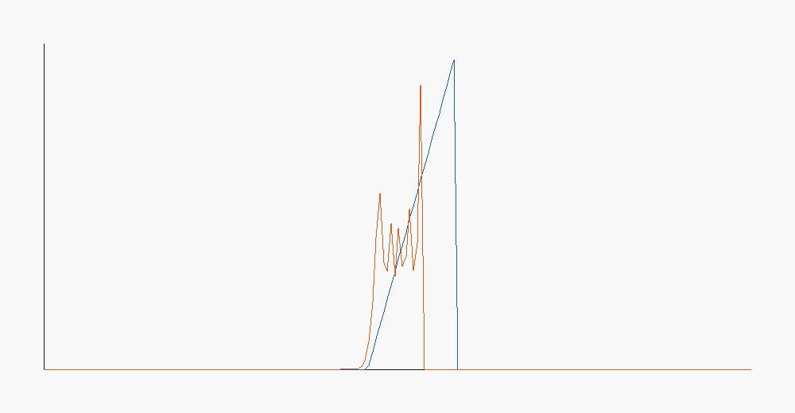
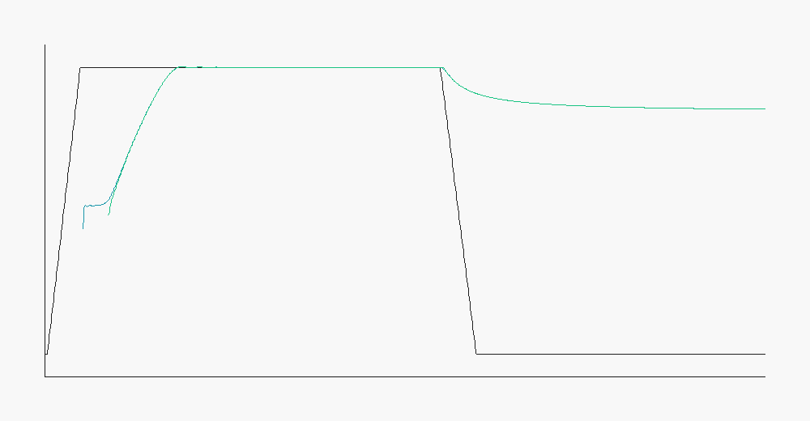
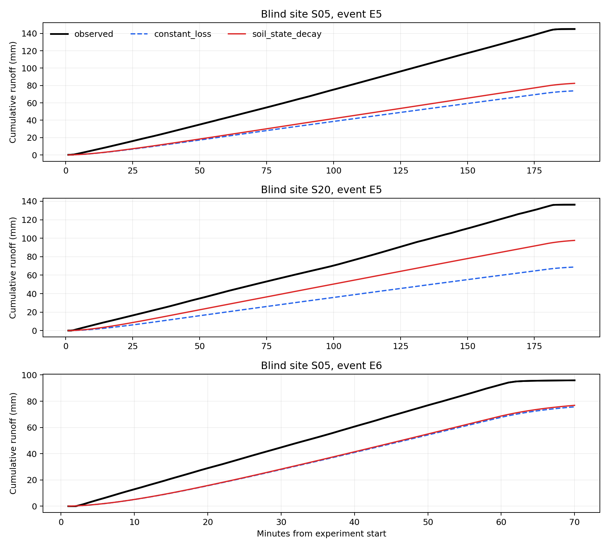
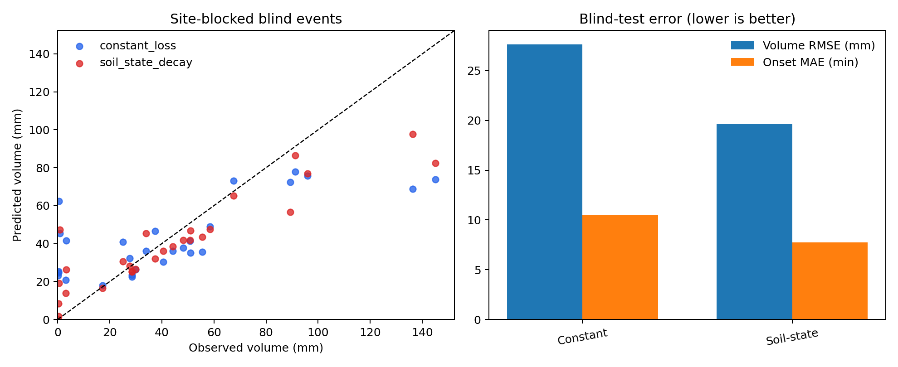
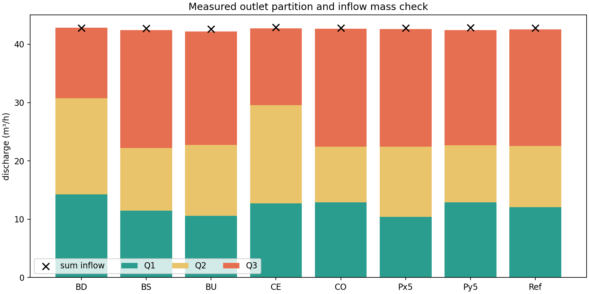
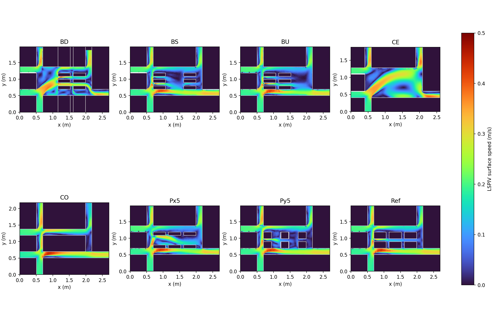
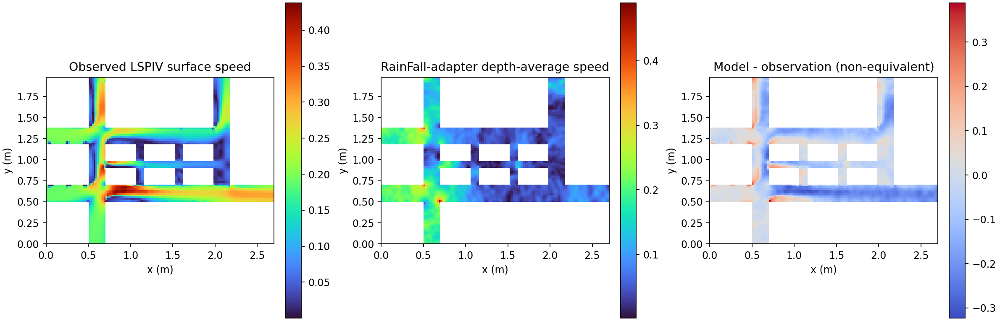
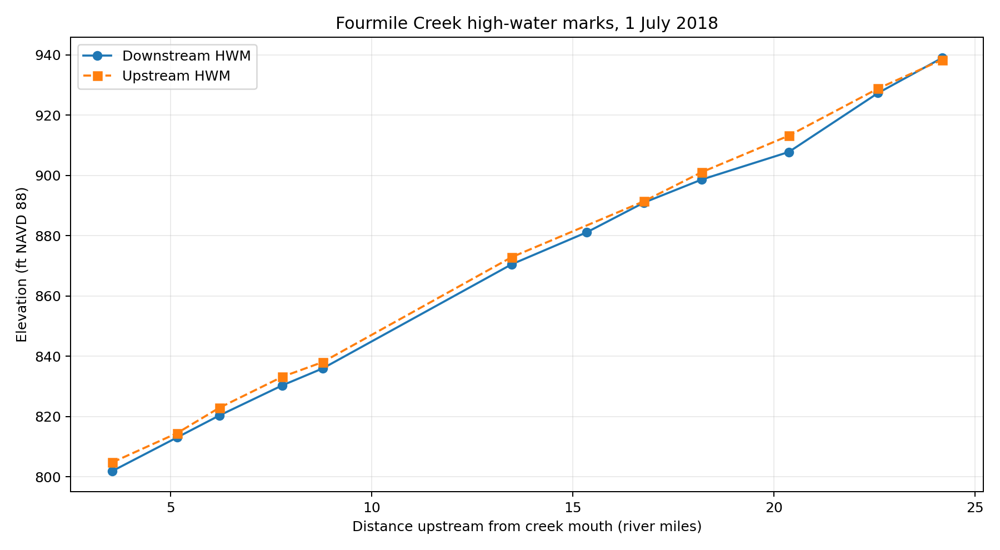
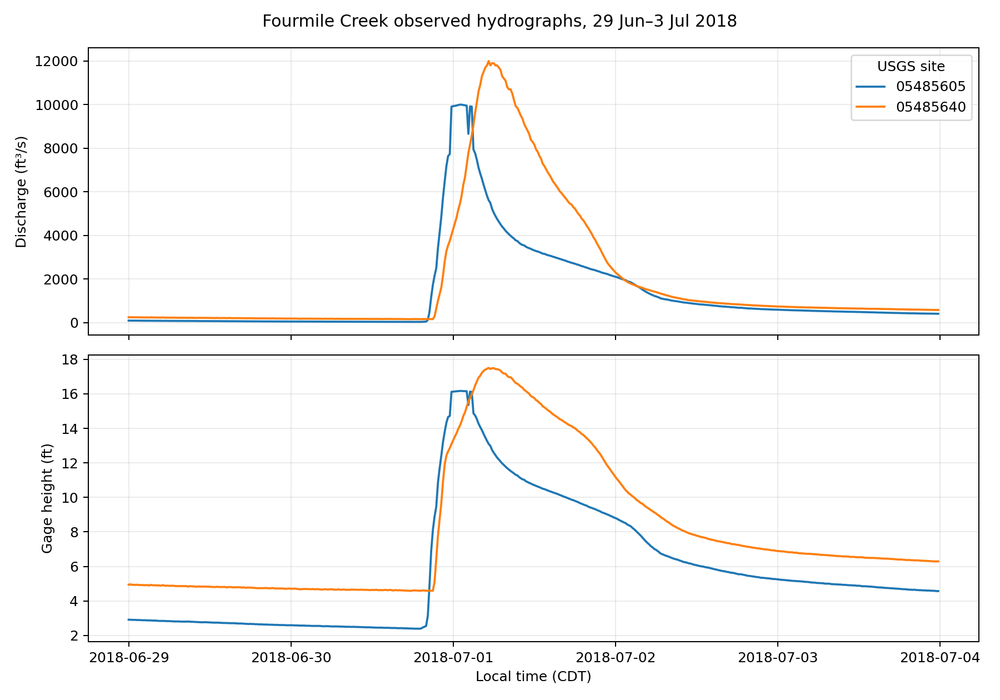
{kind=link}
{kind=link}
{kind=link}
{kind=link}
{kind=link}
{kind=link}
{kind=link}
{kind=link}
{kind=link}
{kind=link}
{kind=link}
{kind=link}
{kind=link}
{kind=link}
{kind=link}
{kind=link}
{kind=link}
{kind=link}